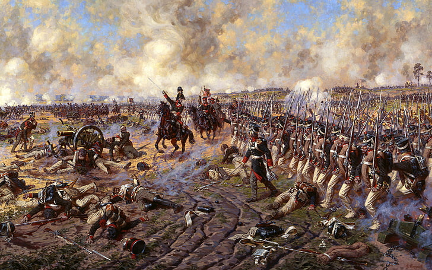
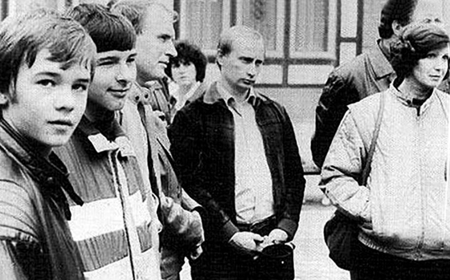

Putin the State and War
Most International Relations (IR) scholars would agree that figuring out causes of war is the ultimate holy grail in the field. Understanding war is key to preventing it, and there is a tonne of material on war that one can read, but Kenneth Waltz’s Man the State and War (1959) is one of the best books out there. The book organises what’s been written about the causes of war into a useful framework.
The following is an attempt to use the framework presented by Waltz to understand the war in Ukraine, but first a quick summary of what the book says. Waltz offers three images (think of them as levels of analysis) at which he says causes of war may be found:
- First image: human nature (man). Humans are the main cause, but some thinkers believe education can be the solution whereas others think humans are intrinsically evil and incurable.
- Second image: the state. Proponents of this theory believe causes of war lay in the structure of the state. The assumption is basically good states don’t go to war, bad states do. We can think of two categories here: the liberals who believe that democracies tend to do more trade and cooperation with other countries. Closer ties (and globalisation) mean states are too interlinked to go to war. The socialists, on the other hand, think it’s class struggle and inequality that lead to war, and if we abolish capitalism peace will prevail.
- Third image: causes of war can be found at the international level. States in the international system exist in a state of “anarchy”. Anarchy in International Relations doesn’t mean chaos, but that states live in an environment with no overarching authority over them. State survival is key, and if there’s no one to arbitrate or enforce international decisions, a state has only itself to fend for its security and interests and these should be taken very seriously.
Again, this blog is not about assessing the three images Waltz proposed, nor is it advocating one of them as the main cause of war over the others. Theory is meant to capture one element of reality; that’s how theory is useful. Reality, on the other hand, is extraordinarily complex, and often, a vast web of reasons coalesce together to cause an event to happen.
Understanding the war in Ukraine through the prism of Waltz’s three images:
-
The first image, man:
First, understanding Putin’s psychological profile is important here. Doing this properly would take years, but I want to highlight that Putin is an ex KGB officer. According to this paper on the CIA’s website, “Spies frequently have pathological personality features that pave the way to espionage, such as thrill seeking, a sense of entitlement, or a desire for power and control.” Couldn’t agree more. Add to that the fact that Putin has been ruling as the undisputed leader in Russia for 22 years now (Medvedev was a constitutional necessity and Putin’s puppet 2008-2012). Such a long time in power is bound to get into your head.  Second, many people spent lockdown doing quizzes with friends and family and reviving old hobbies. Not Putin. Putin most likely spent it in the Kremlin library reading about Ukraine and the history of the region. In fact, Putin wrote a 2000 word essay on how Russia and Ukraine are one nation published on July 12th 2021. This shows how personal the matter became to Putin. -
The second image, the state:
There’s no doubt that because Putin keeps a tight grip on the domestic politics in Russia that he’s able to take his country on such dangerous foreign adventures like the war in Ukraine. There’s no meaningful opposition that can voice a different opinion due to years of systematic suppression and demonisation. Putin is also able to manipulate public opinion and disseminate lies that justify any course of action he decides to take. The Putin regime are masters of deceit and propaganda, but sadly justifying conflict is not a hard job to achieve for Putin as these things become a self fulfilling prophecy after the first step of aggression is taken. Sanctions and Western reaction can then be easily used to back up the Putin regime’s lies as no one really cares about who started it. Would Putin have been able to achieve what he achieved domestically if Russia had been a democracy? We will never know. After all, Blair and Bush managed to start war from two democracies, but it’s clear that they had to overcome more obstacles domestically than Putin had, obstacles that could have potentially stopped the war. Again, we will never know. - The third image, the international system:
Russia for sure had legitimate security concerns over NATO expansion into the east. The main argument against this view is usually that NATO is a defensive alliance and the statement that “the West will never attack Russia, are you mad!”. These statements might be true, but Russia can’t take this as the ultimate guarantee when the risks involve its own security and therefore survival as a state. I’ve found this is often the most misunderstood point when it comes to the war in Ukraine, so I’m going to try and explain my view more. NATO has no intention of attacking Russia is not the same as NATO cannot attack Russia. This is the nub of the argument here. The reason this differentiation is made is because situations change and leaders change, and what is today seen as outrageously impossible might not be the case in 10 or 20 years. Sadly Ukraine itself provides an example supporting this point. When Ukraine gave up their nuclear weapons in 1994, they had all the assurances in the world, and it was impossible to see at the time a war in Europe and an aggressive Russia that would attack. The situation has changed and those promises didn’t prove useful to Ukraine in 2022.
To get back to my main argument, Russia had legitimate concerts over NATO expansion, but the full invasion of Ukraine beyond the Donbas region has no realpolitik calculations whatsoever.
There is no doubt all three images combined are the reason why we are where we are in Ukraine. But if we want to do a little blame apportioning exercise in light of the above analysis, it’s clear that Putin shares the bulk of the blame individually as a person. How?
We saw how Putin in the first image is an arrogant dictator, and probably a psychopath given his KGB roots, who became obsessed with Ukraine to a level where most observers have started to question his sanity.
Putin is also pretty much the reason why Russia is a dictatorship (image two). As mentioned above, Putin used every trick in the book in the last 22 years to make sure his opponents are either in jail, exile or dead.
As for the third image, Putin had legitimate concerns about NATO and Ukraine potentially becoming a member of NATO, but he didn’t need to launch a full invasion of Ukraine. Russian backed separatists in the east had already made sure Ukraine couldn’t join NATO as NATO members can’t join if they have a territorial dispute with any other neighbouring country. But if Putin wanted to make sure, he could’ve stayed in the Donbas region. The fact that he decided to go all the way to Kiev can’t be explained/justified by the third image. Again it’s Putin that’s to blame here.
So in summary, and at least applicable to the war in Ukraine, it seems that man is the most potent cause of war, one man in particular, Putin.
Comments